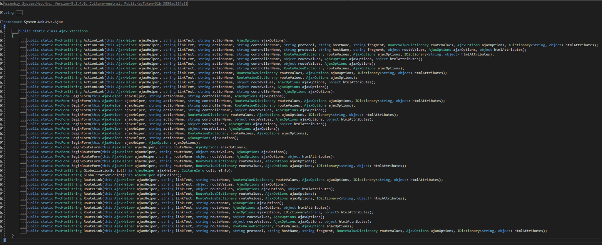

Ajax Helper 的擴充方法如下

發現有 ActionLink、BeginForm、BeginRouteForm、GlobalizationScript、RouteLink 方法可使用，
目前先 focus 在 Ajax.ActionLink 的用法。
Ajax.ActionLink多載用法
Ajax.ActionLink使用方法跟ActionLink大同小異，只差ajaxOptions參數而已。
一、AjaxOptions 類別中的屬性列表
| 名稱 | 說明 |
| Confirm | 取得或設定在送出要求之前，要在確認視窗中顯示的訊息。 |
| HttpMethod | 取得或設定 HTTP 要求方法 ("Get" 或 "Post")。 |
| InsertionMode | 取得或設定模式，這個模式會指定如何將回應插入至目標 DOM 項目中。 |
| LoadingElementDuration | 取得或設定值 (以毫秒為單位)，在顯示或隱藏正載入的項目時，這個值會控制動畫的持續時間。 |
| LoadingElementId | 取得或設定載入 Ajax 函式時所顯示之 HTML 項目的 id 屬性。 |
| OnBegin | 取得或設定更新頁面之前所要立即呼叫之 JavaScript 函式的名稱。 |
| OnComplete | 取得或設定在已執行個體化回應資料但尚未更新頁面之前所要呼叫的 JavaScript 函式。 |
| OnFailure | 取得或設定頁面更新失敗時所要呼叫的 JavaScript 函式。 |
| OnSuccess | 取得或設定成功更新頁面之後所要呼叫的 JavaScript 函式。 |
| UpdateTargetId | 使用來自伺服器的回應取得或設定要更新之 DOM 項目的 ID。 |
| Url | 取得或設定要對其提出要求的 URL。 |
二、Ajax.ActionLink範例
Index.cshtml
@{
ViewBag.Title = "Home Page";
}
<p>using ajax</p>
@Ajax.ActionLink("show the Privacy", "PrivacyPolicy", new AjaxOptions { UpdateTargetId = "privacy" })
<div id="privacy"></div>
@section scripts{
<script src="~/Scripts/jquery.unobtrusive-ajax.js">
</script>
}
HomeControler.cs
public class HomeController : Controller
{
public ActionResult Index()
{
return View();
}
public ActionResult PrivacyPolicy()
{
if (Request.IsAjaxRequest())
{
return PartialView("_PrivacyPolicy");
}
return View("_PrivacyPolicy");
}
}
_PrivacyPolicy.cshtml
<p>this is Privacy Policy</p>
注意：
在使用Ajax.ActionLink方法前必須要做
(1)、於Package Manager Console安裝Ajax適配器
指令為Install-Package Microsoft.jQuery.Unobtrusive.Ajax
(2)、需在Html原始碼裡安裝該適配器，如下，注意安裝順序不可對調
<script src="∼/Scripts/jquery-1.10.2.js"></script> <script src="∼/Scripts/jquery.unobtrusive-ajax.js"></script>
(3)、另外注意於Web.config檔是否有添加或開啟UnobtrusiveJavaScriptEnabled
<configuration> <appSettings> <add key="UnobtrusiveJavaScriptEnabled" value="true" /> </appSettings> </configuration>
(4)、確認你的瀏灠器是否開啟javascript功能
參考資料：